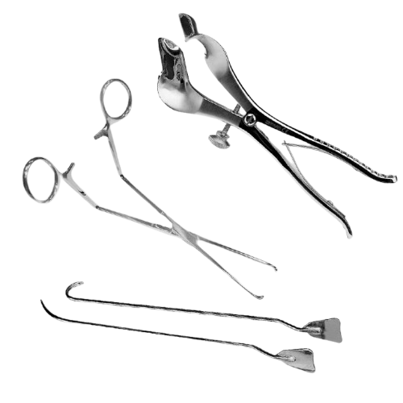

KILLER PROFILE
CRIME SCENE EVIDENCE

REPERTO B: ATTREZZI CHIRURGICIL'ottava e ultima stagione chiude il cerchio della vita di Dexter Morgan, riportandolo alle origini del suo Oscuro Passeggero. L'introduzione della dottoressa Evelyn Vogel, la neuropsichiatra che aiutò Harry a creare il famoso "Codice", rivela che Dexter non è stato l'unico esperimento della donna. Un nuovo e misterioso assassino, soprannominato il Chirurgo del Cervello, inizia a lasciare pezzi di materia cerebrale sulla soglia di casa della dottoressa Vogel, trasformando l'indagine in un incubo familiare distorto.
Dietro gli omicidi del Chirurgo si nasconde Oliver Saxon, un uomo che vive sotto falso nome conducendo una vita apparentemente normale a Miami. La verità biologica è sconvolgente: Oliver è in realtà Daniel Vogel, il figlio maggiore della dottoressa Vogel, creduto morto anni prima in un incendio in un ospedale psichiatrico in Inghilterra. Daniel è uno psicopatico puro, affetto da un sadismo narcisistico che lo rende incapace di provare qualsiasi forma di empatia, persino nei confronti della madre che lo ha abbandonato.
A differenza di Dexter, che è stato guidato e limitato dal Codice per canalizzare i suoi impulsi, Daniel è cresciuto senza regole, lasciando che la sua mostruosità si sviluppasse in modo selvaggio e distruttivo. Oliver vede in Dexter un impostore, un "fratello adottivo" che ha ricevuto l'amore e le attenzioni della madre che spettavano di diritto a lui, scatenando una guerra psicologica per il controllo del destino di Evelyn Vogel.
Il modus operandi del Chirurgo del Cervello unisce le conoscenze mediche ereditate dal contesto familiare a una crudeltà psicologica mirata a terrorizzare le sue prede.
L'Asportazione del Lobo: Oliver utilizza strumenti chirurgici professionali (seghe ossee, bisturi) per aprire il cranio delle sue vittime. Rimuove con precisione millimetrica la parte del cervello deputata alla vista e alle emozioni, lasciando che la vittima sperimenti il terrore della cecità prima della morte.
I Messaggi in Barattolo: I pezzi di cervello asportati non vengono distrutti, ma conservati in barattoli di vetro sotto formalina e spediti come pacchi regalo alla dottoressa Vogel, un modo per ricordarle costantemente il fallimento delle sue teorie sulla mente umana.
La Brutalità Finale: Quando il cerchio si stringe, Saxon abbandona la precisione medica e passa alla violenza disperata, usando armi da fuoco o coltelli per colpire i punti vitali dei protagonisti, come dimostrato nel drammatico scontro che segnerà per sempre il destino di Debra Morgan.
La resa dei conti con Oliver Saxon rappresenta l'atto finale del viaggio di Dexter. Catturato e immobilizzato su un tavolo che non ha più bisogno di plastica protettiva, Saxon diventerà la vittima dell'ultimo, freddo e calcolato fendente di Dexter, eseguito non più per nutrire l'Oscuro Passeggero, ma per pura e definitiva vendetta. Questo delitto metterà la parola fine alla storia dei serial killer di Miami, lasciando solo macerie e un oceano pronto a ricevere l'ultimo, tragico tributo.
"Tu pensavi che io fossi come te... ma io sono ciò che succede quando non ci sono regole."